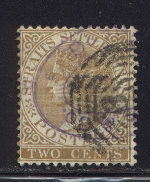
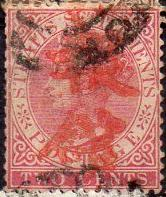
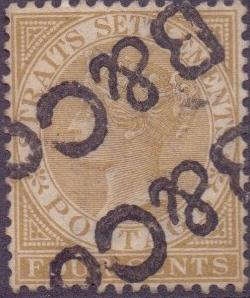

{kind=link}

Chop from a Chinese language newspaper.
Return To Catalogue - Firm chops letters C-J - Firm chops letter K - Firm chops letters L-M - Firm chops letters N-Z - Straits Settlements 1867 issue - Straits Settlements 1868-1901 - Straits Settlements cancels
Note: on my website many of the
pictures can not be seen! They are of course present in the cd's;
contact me if you want to purchase them.
The stamps of Straits Settlements are almost always heavily cancelled, most of the time they also bear firm chops (as a protection against theft). Some of them are large enough to cover three individual stamps. The following website https://michelhoude.com/BMSM/Index.html shows many of such chops and provides very useful information. More information on some firms that used these chops: http://seasiavisions.library.cornell.edu/catalog/seapage:233_675. A list of forwarding agents can be found at: http://pbbooks.com/webfa.htm Examples of such chops:

Example of firm-chops, often in violet, blue or red colors. It is
not always easy to identify them. Such as the one above.

Chop from a Chinese language newspaper.
"ADAMSON GILFILLAN & Co. Ltd."
"ALMEIDA & Co SINGAPORE"
"A.A.ANTHONY & Co PENANG"
"ARTHUR BARKER SINGAPORE" with Chinese text in the
center here on two fiscal stamps.
"BARLOW & CO SINGAPORE", a different type with a
double outer line appears to exist.
"B.C.L."; Borneo Company Limited
"BCOL" (the "O" is inside the "C"),
Borneo Company Limited

"B & Co" for Boustead & Co. Also handwritten.
The handwritten "B&Co" is quite common. Note the
unsurcharged 8 annas Indian stamp with manual
"B&Co"
"BECKER & ?? SINGAPORE"

"BEHN MEYER & Co SINGAPORE" several types exist
(elliptic, circular with date in the center), also a similar
chop, but from "PENANG". Also a perfin with
'B.M.&Co' of the same company.
"BORNEO COMPANY LIMITED FORWARDED" Also exists in blue
color.
"FORWARDED BY BOUSTEAD & CO PENANG" and
"BOUSTEAD ?? SINGAPORE" with an additional
"B&Co" chop.
"D.BRANDT & Co SINGAPORE" in a double ellipse,
center empty?
"FORWARDED BY BRENNAND & CO SINGAPORE".
"FORWARDED BY BRENNAND OLDHAM & CO".
"BRINKMANN & Co SINGAPORE"
"BRINKMANN KUMPERS & Co SINGAPORE"
"FORWARDED BY"? "BROWN & CO PENANG", also
exists with "PINANG"
{kind=link}